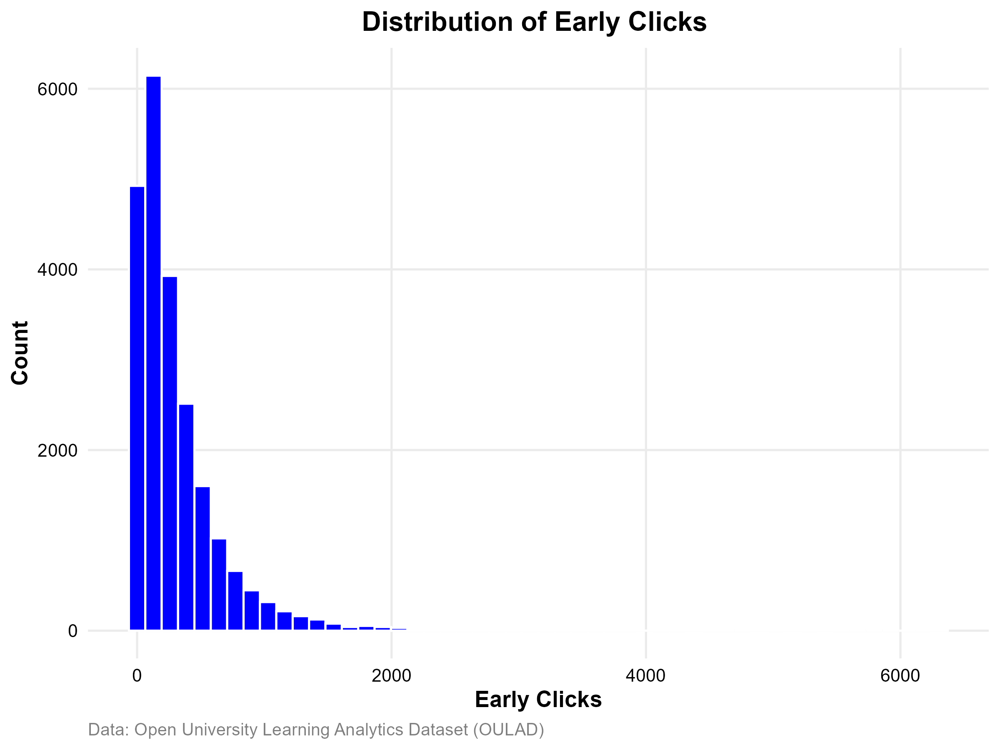
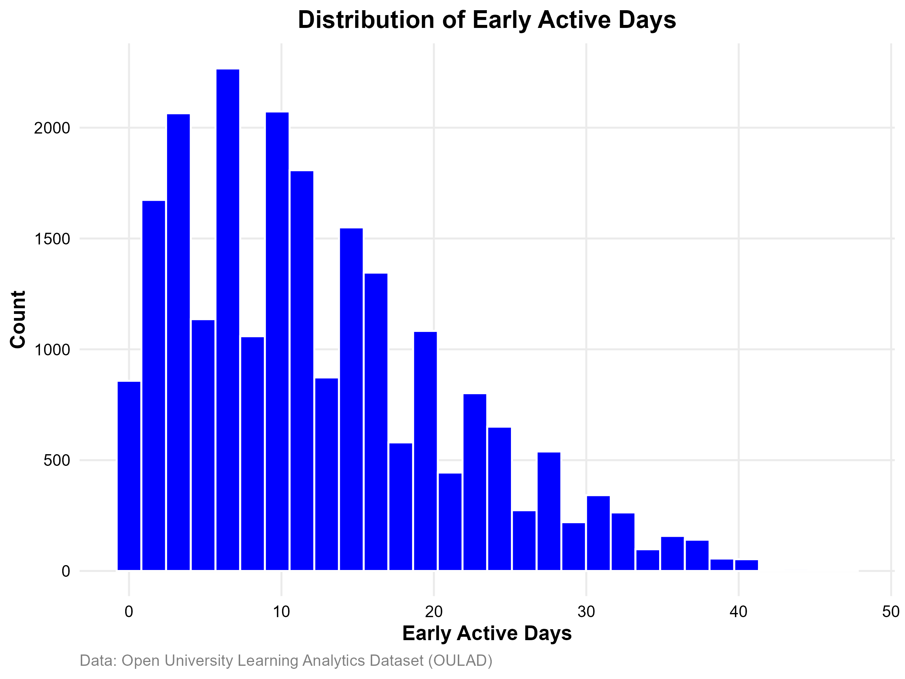
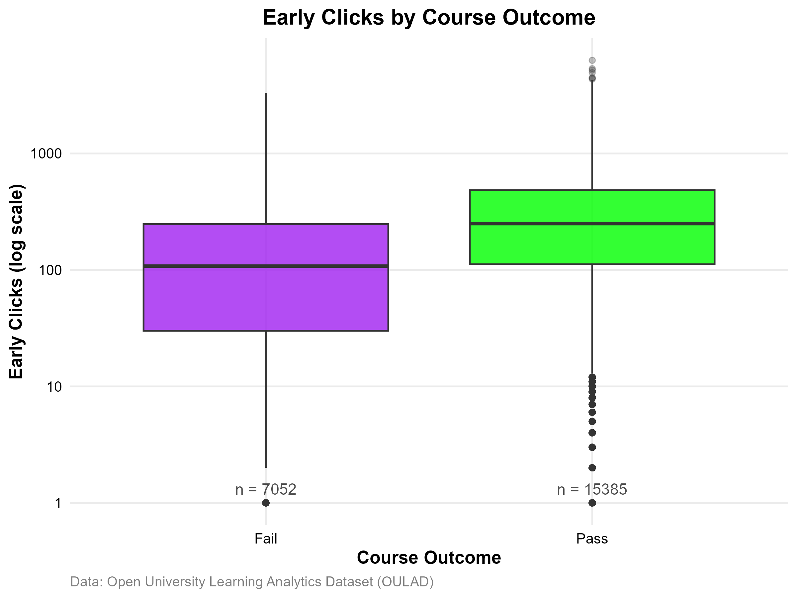
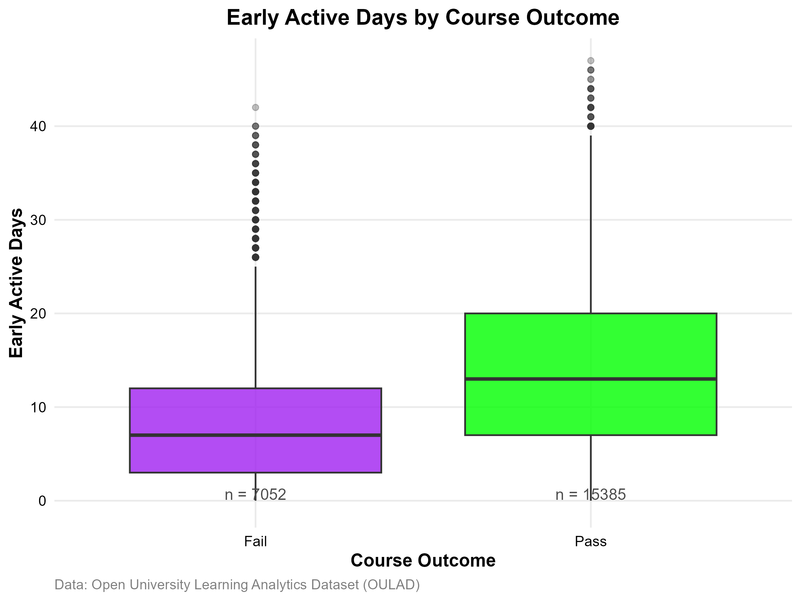
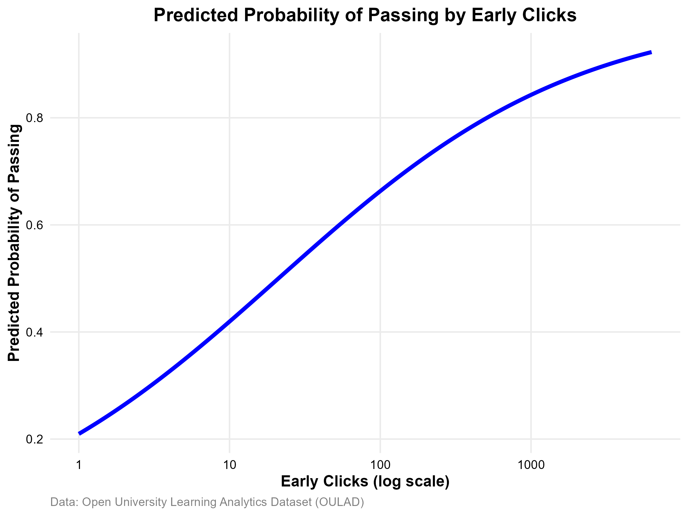
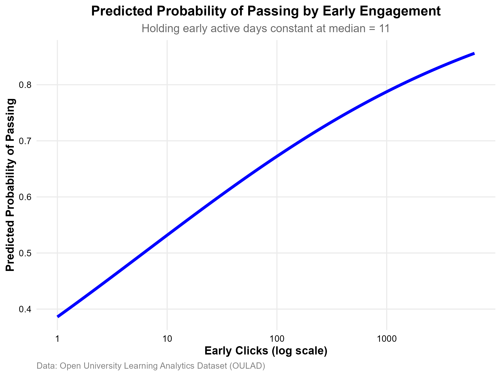
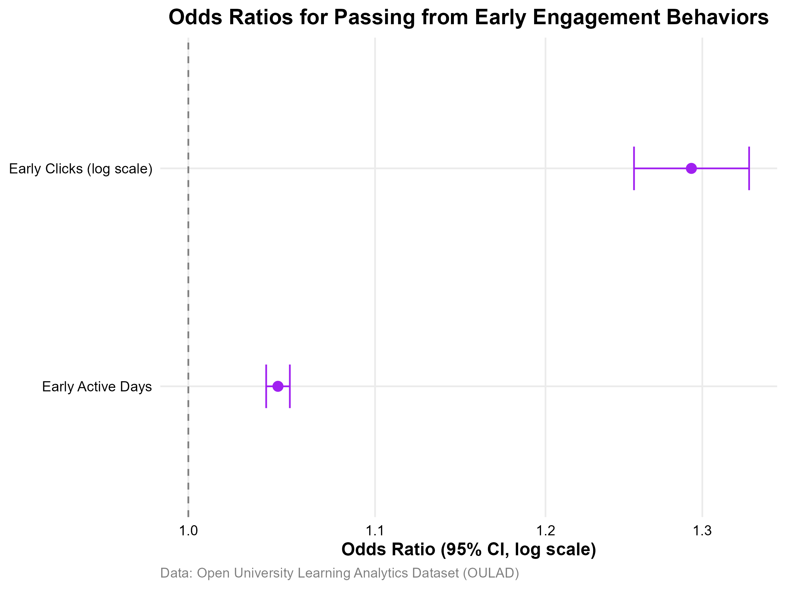

Project Overview
This project analyzed 22,437 student records from the Open University Learning Analytics Dataset (OULAD) to investigate whether early engagement behaviors can predict academic success in online learning environments.
Using logistic regression and learning analytics techniques, I examined how Early Clicks and Early Active Days relate to the likelihood of students successfully completing a course.
The project demonstrates the application of educational data mining and predictive analytics to identify indicators of student success.
Early Clicks emerged as the strongest predictor of student success in the analysis, highlighting the relationship between interaction with learning materials during the first three weeks and course outcomes.
Research Question
Can early engagement behaviors predict whether a student will successfully pass a course?
The analysis examined students' interactions with online learning materials during the first 21 days of a course.
Two engagement indicators were considered: the number of early clicks and the number of days students were active in the learning environment.
Dataset
The study used the Open University Learning Analytics Dataset (OULAD) , which contains information about students' online learning activities and academic outcomes.
The analysis included 22,437 student records.
Data Source
Open University Learning Analytics Dataset (OULAD)
Early Clicks
Number of student interactions with online learning materials during the first 21 days.
Early Active Days
Number of days students actively engaged with the online learning platform during the early period.
Course Outcome
Pass or Fail outcome used in the logistic regression analysis.
Research Methods
The project used quantitative data analysis and predictive modeling techniques.
Data Preparation
Data cleaning and preparation for statistical analysis.
Feature Engineering
Preparation of Early Clicks and Early Active Days as predictors.
Exploratory Data Analysis
Examination of engagement distributions and differences by course outcome.
Logistic Regression
Modeling the relationship between early engagement and the likelihood of passing.
Odds Ratio Analysis
Interpreting the relationships between predictors and the odds of passing.
Predictive Visualization
Visualizing predicted probabilities and model results using R.
Tools Used
R | ggplot2 | Logistic Regression | Statistical Learning | Data Visualization
Key Visualizations
The following visualizations were created as part of the analysis. They show engagement distributions, differences by course outcome, and logistic regression predictions.
Distribution of Early Clicks

Distribution of student click activity during the first 21 days of the course.
View Full ImageDistribution of Early Active Days

Distribution of the number of days students were active during the early engagement period.
View Full ImageEarly Clicks by Course Outcome

Comparison of early click activity between students who passed and those who failed.
View Full ImageEarly Active Days by Course Outcome

Comparison of early active days between students who passed and those who failed.
View Full ImagePredicted Probability of Passing by Early Clicks

Logistic regression visualization showing how the predicted probability of passing changes with early click activity.
View Full ImagePredicted Probability of Passing by Early Engagement Behaviors

Visualization of predicted passing probabilities using early clicks and early active days.
View Full ImageOdds Ratios for Passing

Odds ratio visualization used to interpret the relationship between early engagement predictors and the odds of passing a course.
View Full ImageKey Findings
- Students who passed demonstrated higher early engagement. The analysis showed differences in early engagement between students who passed and those who failed.
- Early Clicks emerged as the strongest predictor. Students with more interactions with learning materials during the first 21 days were more likely to pass.
- Early Active Days also contributed to prediction. The findings suggest that engagement consistency, alongside engagement intensity, is relevant to academic outcomes.
- Predicted passing probability increased with engagement. The logistic regression visualizations showed higher predicted probabilities of passing at higher levels of early engagement.
- Early engagement may help identify students who need support. Engagement indicators could provide useful information for educators seeking to recognize potential academic difficulties earlier.
Implications for Education
The findings highlight the potential value of examining early student engagement when considering academic support.
Information about student activity could help educators recognize engagement patterns and decide when additional follow-up may be appropriate.
However, online engagement measures do not fully capture student understanding, motivation, or personal circumstances.
Predictive information should therefore support educators' decisions rather than replace professional judgment.
This project examined predictive relationships. It did not evaluate an implemented student intervention.
Skills Demonstrated
Project Reflection
This project brought together my interests in education, data analysis, and understanding student learning experiences.
Analyzing student engagement data provided practical experience in preparing data, fitting logistic regression models, and communicating statistical relationships through visualizations.
The project also reinforced the importance of interpreting educational data carefully.
While engagement measures can provide useful information, they represent only part of a student's learning experience.